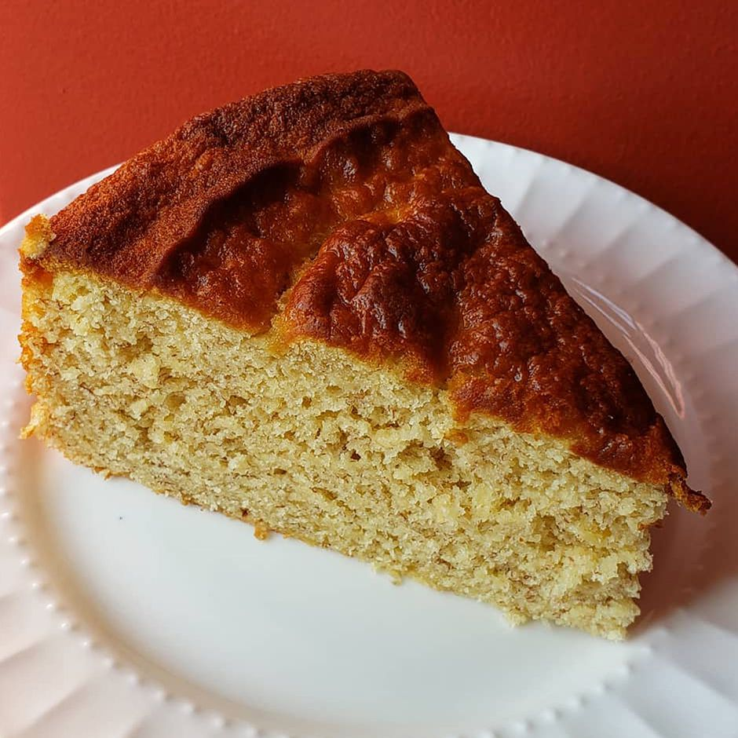

Banana Cake Recipe

Description
Learn how to make banana cake with this versatile and quick recipe.
Not only is it moist and delicious, but the same batter can be used
to make banana bread and muffins. This cake is delicious frosted with
chocolate or cream cheese frosting.
Ingredients
- 2 ½ cups all-purpose flour
- 1 tablespoon baking soda
- 1 pinch salt
- 1 cup white sugar
- ¾ cup light brown sugar
- ½ cup unsalted butter, softened
- 2 eggs
- 4 ripe bananas, mashed
- ⅔ cup buttermilk
- ½ cup chopped walnuts
Steps
- Preheat the oven to 350 degrees F (175 degrees C).
Grease and flour two 8-inch round pans.
- Whisk together flour, baking soda, and salt in a small bowl; set aside.
- Cream white sugar, brown sugar, and butter in a large bowl until light and
fluffy. Beat in eggs, one at a time. Mix in mashed bananas. Add flour mixture
alternately with buttermilk, mixing well after each addition. Stir in chopped
walnuts. Pour batter into the prepared pans.
- Bake in the preheated oven until cake springs back when gently pressed,
about 30 minutes.
- Remove cake layers from the oven and place them on a damp tea towel to cool.
Home